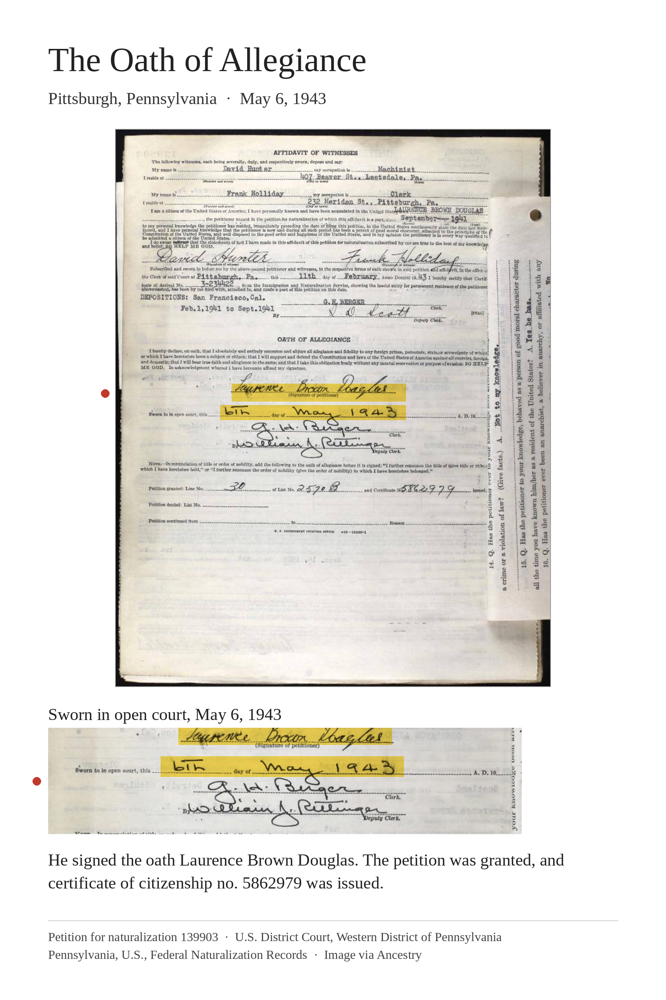

1943 oath of allegiance: Laurence Brown Douglas becomes a citizen
Petition for naturalization 139903, U.S. District Court, Western District of Pennsylvania, Pittsburgh. Pennsylvania, U.S., Federal Naturalization Records. Image via Ancestry.

The entry is marked in red and highlighted.
What this document is
The back page of his naturalization petition. Two witnesses swore they knew him, and then he took the oath of allegiance in open court and signed it. That oath made him a citizen.
What it says
- Witnesses David Hunter, machinist, and Frank Holliday, clerk, swore to knowing him since September 1941.
- Oath of allegiance signed Laurence Brown Douglas, sworn in open court May 6, 1943.
- Petition granted; certificate of citizenship no. 5862979.
Why it matters
The day he became an American citizen.